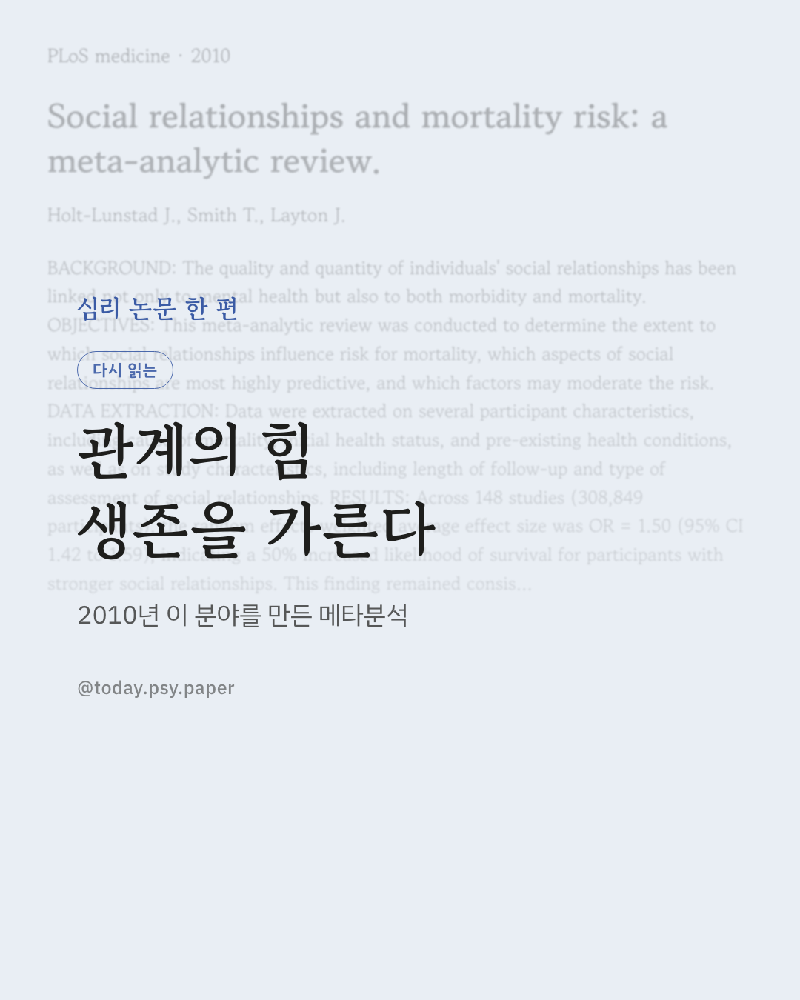
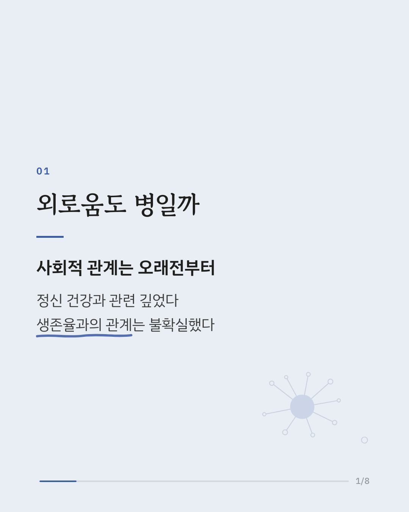
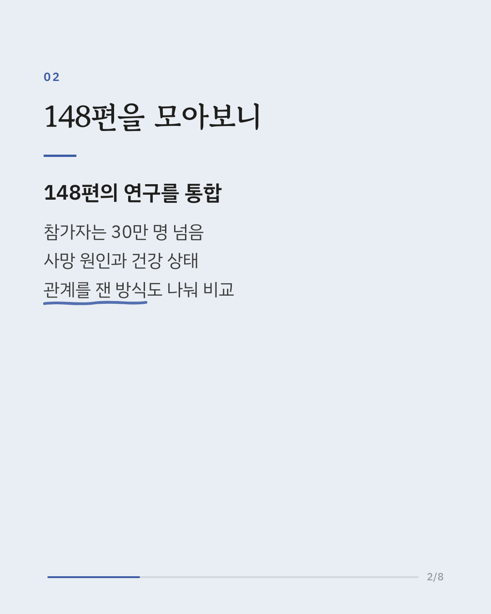
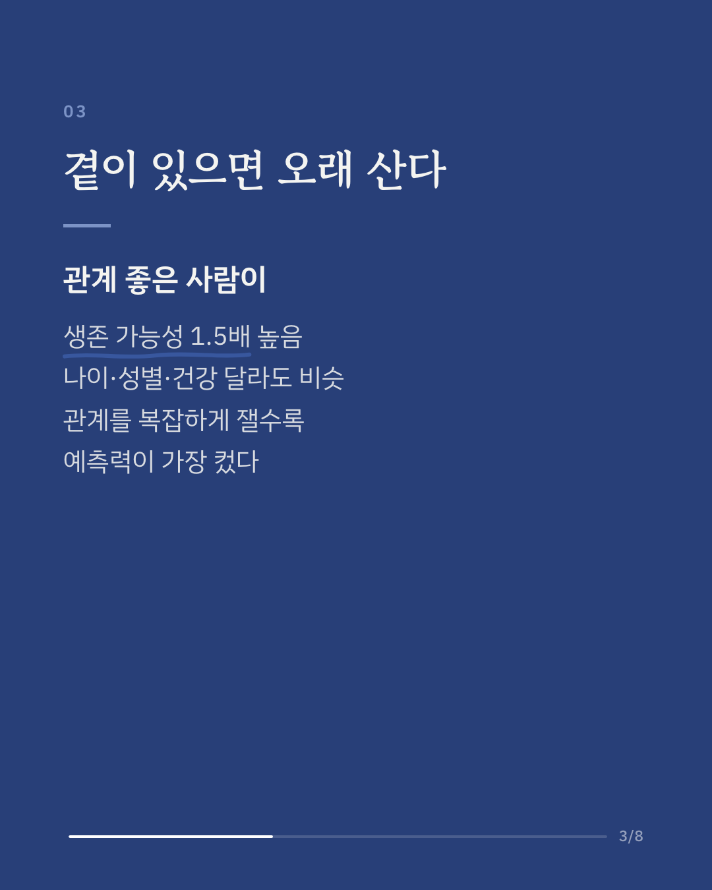
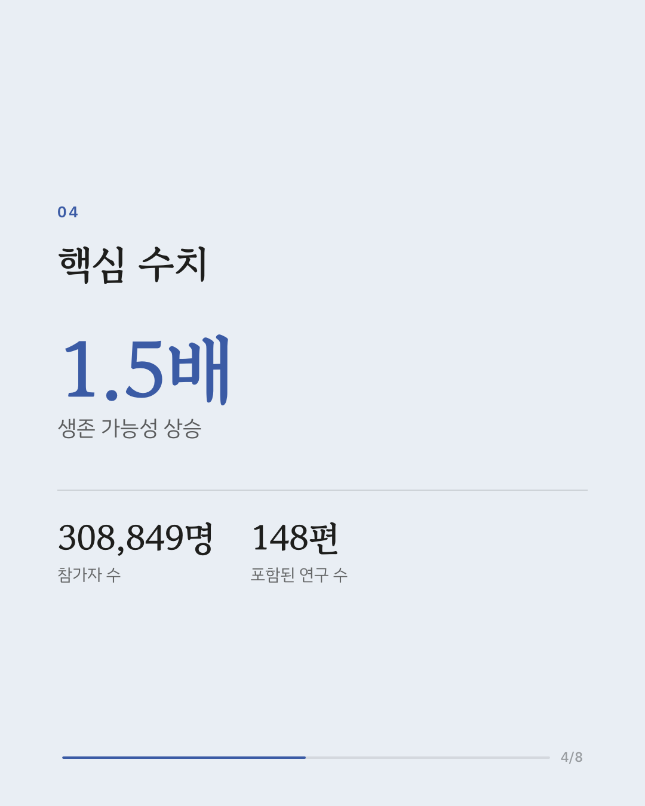
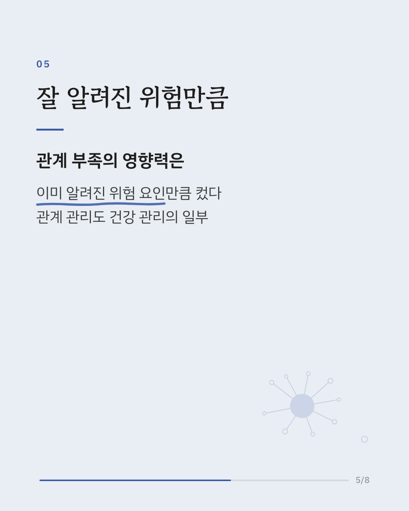
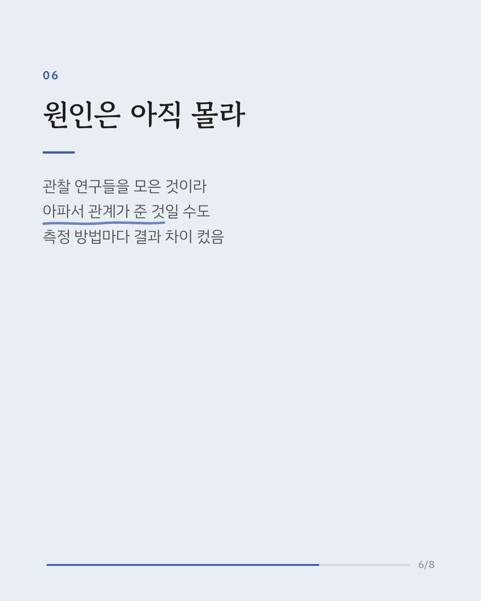
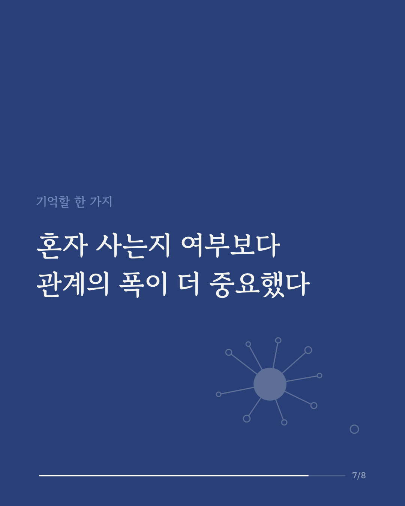
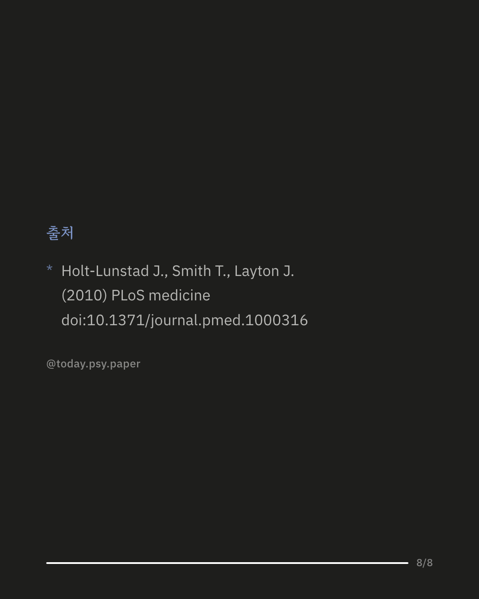

관계가 정신 건강에 도움이 된다는 건 잘 알려져 있습니다. 그런데 실제로 사망률, 즉 생존 여부에도 영향을 미치는지는 따로 검증된 적이 없었습니다. 이 논문은 148편의 연구, 참가자 30만 명이 넘는 데이터를 모아 이 질문에 답한 메타분석입니다. 분석 결과, 관계가 좋은 사람들은 그렇지 않은 사람들보다 생존 가능성이 약 1.5배 높았습니다. 나이, 성별, 애초의 건강 상태, 사망 원인이 달라도 이 경향은 비슷하게 나타났습니다. 다만 관계를 어떻게 측정했는지에 따라 차이가 있었는데, 여러 관계를 복합적으로 살핀 지표일수록 예측력이 컸고, 단순히 혼자 사는지 여부만 본 경우는 예측력이 가장 약했습니다. 이 정도 효과 크기는 이미 잘 알려진 건강 위험 요인들과 비교할 만한 수준이라, 관계의 질과 폭을 건강 관리의 한 축으로 볼 근거가 됐습니다. 다만 포함된 연구 대부분이 관찰 연구라 인과관계를 단정하기는 어렵고, 건강이 나빠지면서 관계가 줄었을 가능성도 배제할 수 없습니다. PLoS medicine (2010), 'Social relationships and mortality risk: a meta-analytic review.' DOI: 10.1371/journal.pmed.1000316 #임상심리 #건강심리학 #사회적관계 #외로움 #정신건강정보 #심리학연구 #논문리뷰
python3 publish.py 20668659